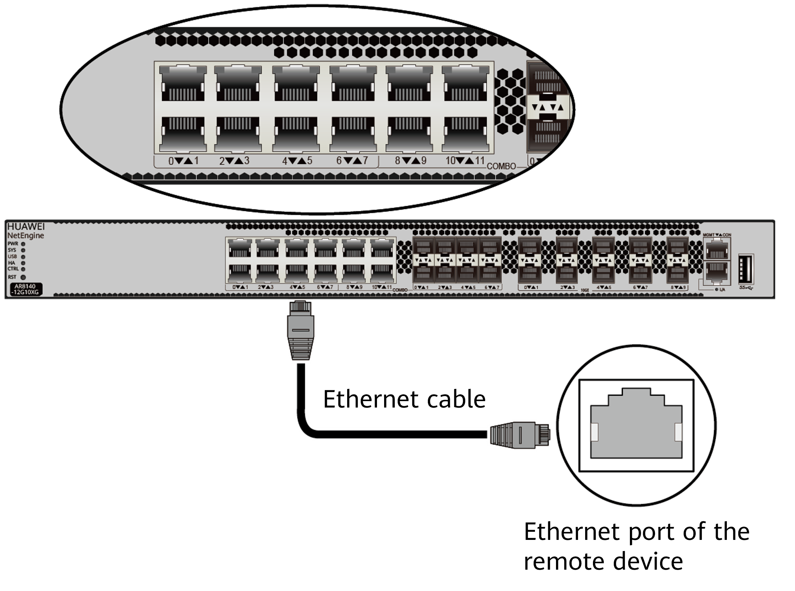

Connecting an Ethernet Cable
Context

- Do not power on the router before you finish connecting cables.
- When connecting cables, pay attention to port identifiers to ensure correct cable connections. Incorrect cable connections may cause damage to the port module or the router.
Tools and Accessories
- Diagonal pliers
- Cable ties
- Marker
- Ethernet cables (purchased separately)
- Ethernet cable labels
Procedure
- Select Ethernet cables of appropriate quantity and lengths according to the number of ports and measured cabling distances.
- Attach temporary labels to both ends of each Ethernet cable and use a marker to write numbers on the labels to identify the cables. For details, see Engineering Labels for Network Cables.
- Lead an Ethernet cable into the cabinet from the top cable inlet (for overhead cabling) or bottom cable inlet (for on-ground cabling), and route the cable along one side of the cabinet.
- Connect one end of the Ethernet cable to an Ethernet port of the router and the other end to an Ethernet port of the peer device.

- Arrange the Ethernet cables to prevent them from twisting around each other, and then bundle them with cable ties. Use diagonal pliers to cut off excess cable ties.
- Remove the temporary labels and attach labels (2 cm away from connectors) to both ends of the Ethernet cable.
Follow-up Procedure
After connecting Ethernet cables, verify that:
- Labels are correctly marked and securely attached to cables, with text facing the same direction.
- Ethernet cables and connectors are intact and tightly connected. All cables are correctly connected.